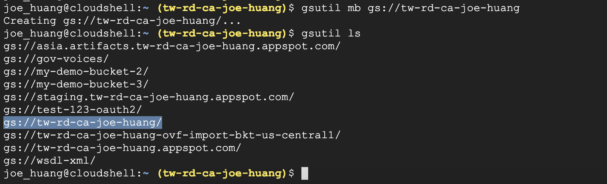
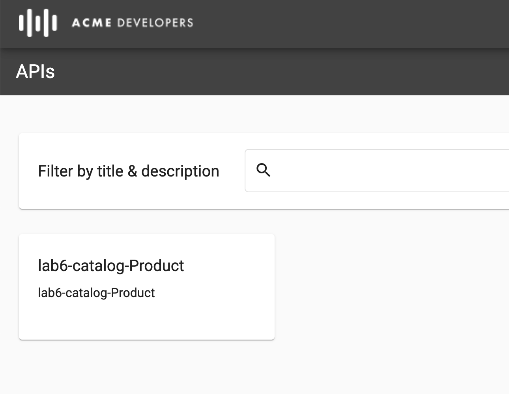

Purpose
APIM是為開發人員提供一個簡單、靈活、全受管，且可以處理針對應用程式後端而建立和操作穩固 API 的所有層面。那麼透過 API Management，您可以用較少的投資更快速啟動新服務，以便將重點放在建置核心商業服務上。因為API Management 的建置是可以建制一個Developer Portal透過已編譯過的Open API sepc，供開發者測試API 並掌握各種Response, Parameter設計，以利快速串接API 開發TSP 服務，今天的分享即是在Apigee上刻一個專有 Developer Portal供你的合作廠商測試你的API。
Prepare Target Point
- 準備測試用的API backend, API proxy, product, Apps
step1. deploy Proxy, Product
step2. Check proxy with lab6
API proxy > done
API products > done
Apps > done
step3. Export your API Proxy
這個步驟只是備份用而已，對後面的實作沒有關系
- 請至
lab6proxy - 確認你的
lab6-catalog.xml檔案是否存在，以及確認APIProxy revision=x name 要等於 =”lab6-catalog”
step4. Create GCS and upload APIProxy folder

OpenAPI Sepc
上傳Open API 範例至Spec
step1. import URL
- 請至 Develop> Specs >
import URL - name: Hipster Products API
- Import URL: https://storage.googleapis.com/apigee-quest/data/hipster-products.yml
- 請修改範例中的{edge-org}的名稱，以利script運行
記錄Apps KEY
step2. Authorize KEY
- 我們在Open Spec頁面中，可以直接測試API
- 但必預先驗證過Key的值，才能繼續在測試頁面發送request
驗證 > done
step3. Test Send out request
可以正常發送request

認識OpenAPI Spec 格式
#1 basePath:
說在在這個endpoint之下的那一個basePath是可用的
#2 securityDefinitions:
說明這隻API 使用的驗證方試為verify API key
#3 paths:
說明有實作那些methods
- description
- schema
#4 definitions
- 其中使用了$ref 更細項的
definitions，同時也將定義的後面寫在下方
右側欄的項目，都是來自Open API spec中所定義的definitions

step3. Test API
- 測試API，得到 200 response
- 同時也得到完整的response structure

測試結果如下
response results
1 | { |
2 | "products": [ |
3 | { |
4 | "id": "OLJCESPC7Z", |
5 | "name": "Vintage Typewriter", |
6 | "description": "This typewriter looks good in your living room.", |
7 | ... |
8 | } |
#1 In console畫面可得到如下
#2 terminal curl方法測試
#3 HTTP 方法測試
API Publishing: Developer Portal
完成了SmartDoc 中的測試，接下來我們把API 發佈至public製作一個網站供測試，步驟如下
step1. 建立developer portal
- Name:
Demo_Hipster Developer Portal - Description:
Developer Portal for Hipster APIs

符合命名
step2. 加入APIM 內的APIs
- 因為Apigee Edge 版本差異，項目可能為APIs, 亦或是API Catalog
右上角的 + API
step3. 3 Follows to inest API
- 選擇API Products
- DOCUMENTATION
選擇你的Open API Spec
記得選擇先帶入的Open API Spec 命為Hipster Products API

確認完成，點選Finish
step4. Portal overview
- 回到Portal overvie檢查剛剛加入的Portal
- 以及選入的API product, API Spec
Discovering API products on the Portal
step1. 轉至Developer portal
第一次測試，我設定為public，所以不用登入
step2. View APIs
請至APIs，查看lab6-catalog-product

基本上可以看剛Open API Spec測試頁面一樣的Spec, 以及定義出的structure
Path: /products
Execute#1 Error no Authorize
- 嘿嘿，這個當然也是要經過驗證身份，若沒有驗證過就會得到error
Execute#2 Authorize
- 我們乖乖得做完驗證
- 可以正常送request
Registering an application on the Portal
這次我們要註冊一個user，你可以想像是外部的TSP，要和你們合作開發，正準備進入你們公司的APIs inventory，我們現在把URL提供給他們，只要他們一經驗證就可以進來測試這些你授權的APIs
step1.
- Sign In a
USER>Create account - 請至信箱開發認證網址
目前的user是有指定的註冊者身份，請見右上方
step2. NEW APP to create a new application.
有了註冊後的帳號，我們可以就自已建立自已的APIs, key，透過這把key 可以存取自已名下的APIs
- 設定
App name,description, 並選入 lab6-catalog-product - 確認APIs 的狀態應為
Actives
App Name: ProductCatalogApp
Description: Application to manage the product catalog
step3. Generate ID, API Keys
TSP 開發者，有別於Apps key之外，可以有自已key, 當然也有自已的key expires
- App ID
- API Keys
step4. 使用新的User key 發送request
- Apoted NEW
API KEY，同樣也可以得到正常的response結果
結論
完成以上的Portal建製與授權，建立APIM Portal 總結目有三項
發布 API 並協助開發人員順利上手
可供自訂的多功能開發人員入口網站不僅內建應用程式註冊服務，
也支援 API 金鑰的自動與手動核准程序，完全是開發人員心目中的理想工具。此外，開發人員還可快速且安全地存取探索、測試及運用 API所需的工具與資訊推動 API 產品上市
利用符合開發人員與合作夥伴需求的 API 產品，協助他們快速上手。透過 API Proxy 及其他設定等組合資源，提高附加價值、探索新商機，同時簡化學習流程。
透過入口網站實現品牌體驗
無論是部署在雲端或內部部署環境中的 Apigee API 管理平台，自訂開發人員入口網站都可提供獨一無二的品牌體驗。第二個實驗，
TSP可以自已註冊一個帳戶，以自助方式存取安全的開發人員入口網站，是開發人員與貴公司能成功交流的關鍵。